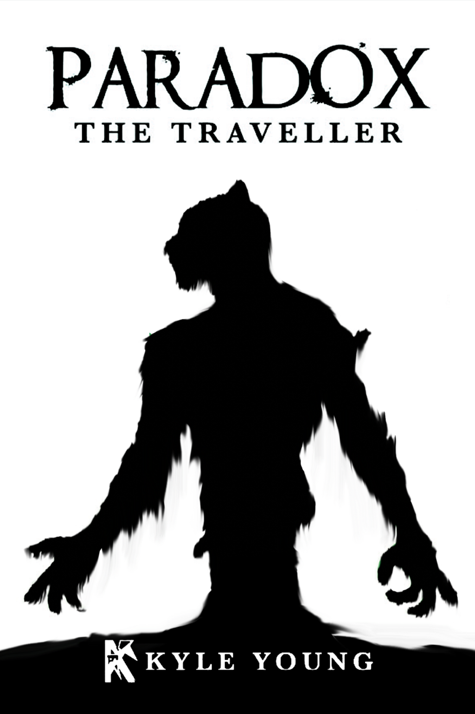
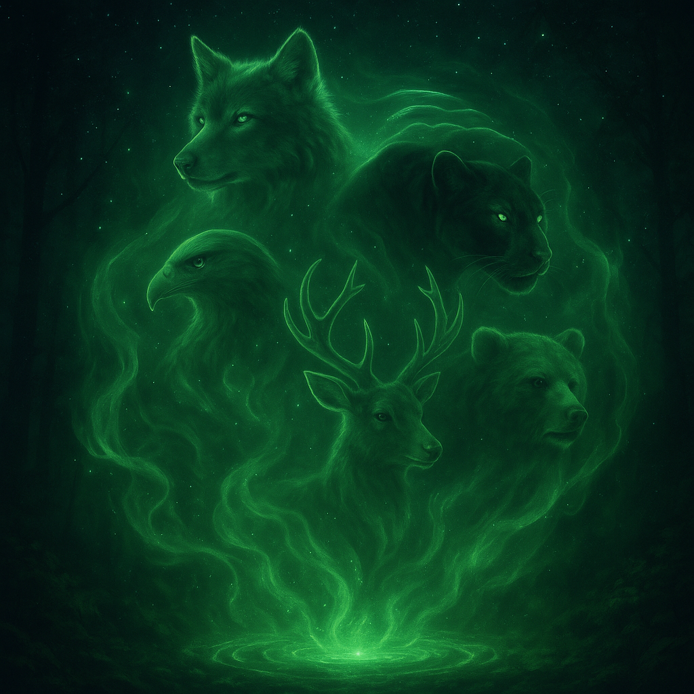
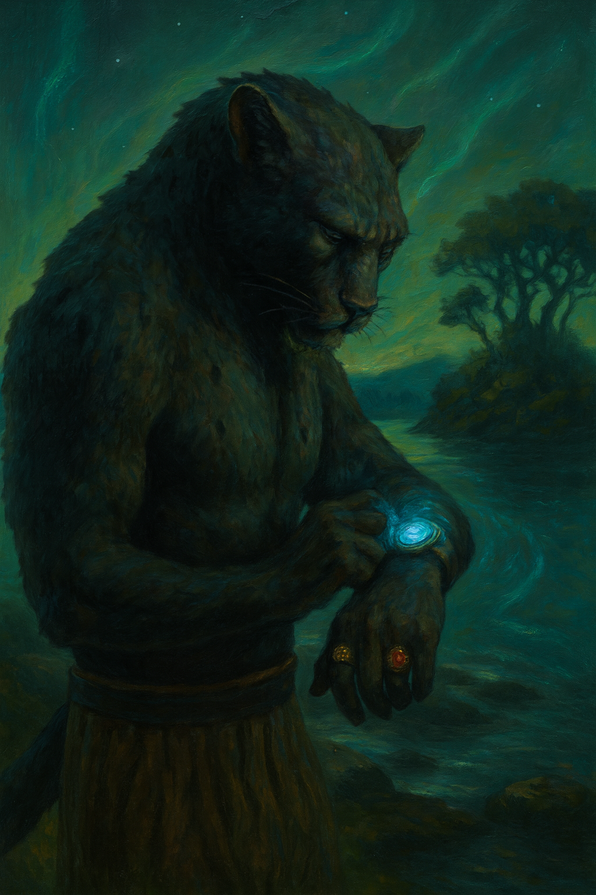
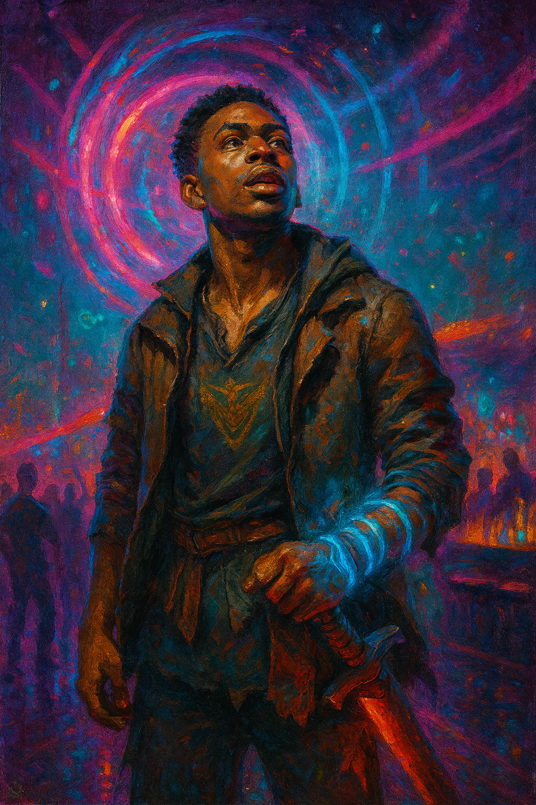
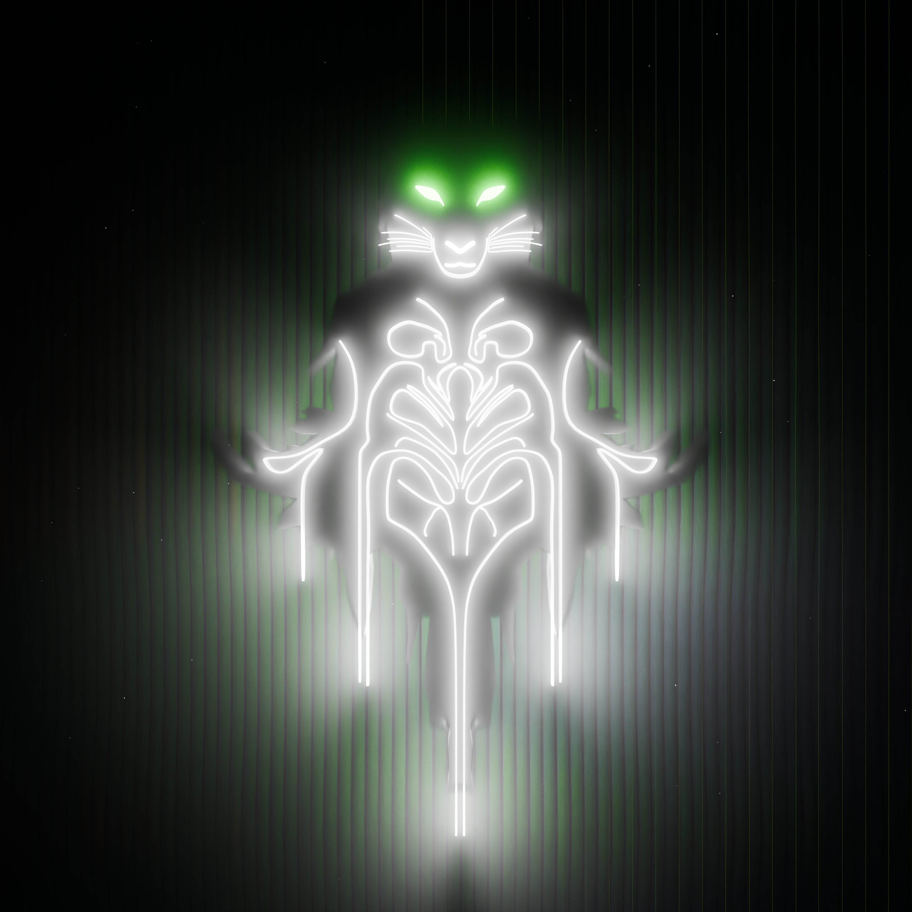

About Paradox The Traveller
In a fusion of destinies and mystical quests, Noah, known as ‘The Traveler,’ embarks on a perilous journey through time in search of magical elements essential for mastering the forces of creation. Alongside him, Joshua, an assassin from the future, grapples with his broken past and the haunting memories that threaten to overshadow his lethal skills. Meanwhile, Edward confronts the loss of his magical prowess and navigates his new existence as a dragon, a form both powerful and alien to him. These three extraordinary characters, each dealing with their own set of challenges, find their fates intertwined as they navigate the complexities of loyalty, power, and identity in a multiverse orchestrated by unseen forces. Together, they face an uncertain future, their paths marked by trials of magic, betrayal, and redemption.

Watch Here to see a interview About The Book
What Your Soul Animal

What Magic is Your Strongest

Noah

Noah is a man who has been transformed into a panther, running from his past toward a future he knows he will never reach. Fragments of his memory are gone, and on his wrist, a relentless countdown ticks away the time left until his death. To survive, he must gather the scattered magical elements capable of creating a new world—one that could save his own. Yet he does not fully understand why.
In his dreams, he glimpses his lost love, guiding him through shadows and uncertainty. With the transformation into his panther form, Noah discovers powers he has never felt before—strength drawn not only from himself, but from the mysterious realm of souls. His spirit animal is more then a part of them it has become him, binding him to forces beyond his comprehension, and setting him on a journey where both love and destiny intertwine with the fate of worlds.
Note Image Is Ai Generate
Joshua
Joshua’s entire life has been nothing but training and surviving the endless tests thrown at him. He was raised on strict orders: don’t ask questions, just pull the trigger on whoever we tell you to. Mission after mission, he obeyed, though deep inside he always sensed something was wrong with the world he served.
He lived in constant anticipation of the next assignment—another name, another target. But everything changed on his last mission with his closest friend, Tom. What they uncovered shattered the illusion: they weren’t protecting time at all, but serving a hidden agenda bent on controlling it.
Haunted by this truth and the injustice it revealed, Joshua faces his greatest conflict when he’s ordered to hunt Noah. Through this mission, he begins to see that life is more than orders, more than the cycle of violence. Now Joshua is caught in an inner war—torn between loyalty and conscience, between what he’s been trained to do and what he knows is right.
Note Image Is Ai Generate

Edward

Edward was just a boy in 1939 when his life was torn apart—the day the Nazis murdered his mother. In that moment of grief and rage, something inside him awakened: a power unlike any other, raw and destructive.
Then came Merlin and Evan, offering him a second chance—a chance to use his gift to make the world a better place. But Edward’s heart longed for more than redemption. His hunger, his choices, and his refusal to let go of what he desired most would ultimately cost him everything.
Note Image Is Ai Generate